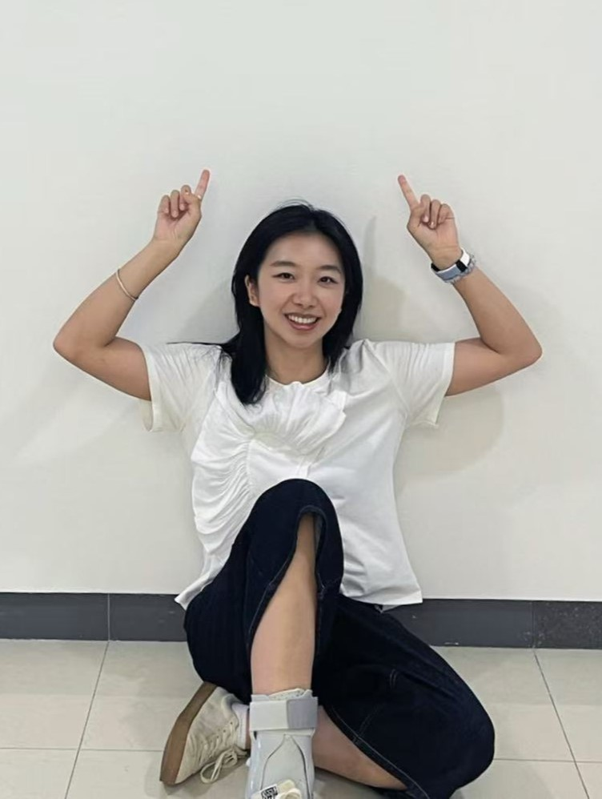
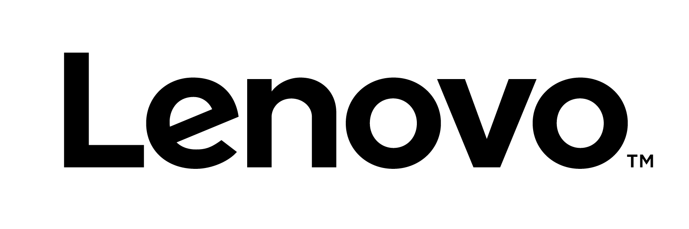

Hello! I'm Mingqi (Grace) Wang. I'm a researcher, designer, and swimming enthusiast exploring how interactive systems can enhance body awareness, physical performance, and accessibility.
Aug. 2024 - May. 2026
Master of Industrial Design, Awarded with Graduate Teaching Assistant Award
Advisor: Dr. Yixiao Wang, Committees: Dr. EunSook Kwon, and Dr. Alexander T. Adams
Thesis: Human Computer Interaction Approaches to Breathing Perception and Feedback in Swimming
Sep. 2018 - Jun. 2022
Bachelor of Fine Arts, Industrial Design Honors, GPA: 3.85/4.0
Awarded with Department Scholarship and Industrial Design Faculty Award
Jan. 2025 - Present
Graduate Research Assistant
Principle Investigator: Dr. Leila Aflatoony
Researched the motivations, challenges and opportunities faced by DIY prosthetic makers across the globe.
Mar. 2025 - Aug. 2025
Research Intern
Principle Investigator: Prof. Jihong Jeung
Worked on music-based health interventions for aging populations; developed interactive VR environments in Unreal Engine to support emotional well-being and social connectedness through embodied, visual and sound-based experiences.
Jan. 2025 - May. 2025
Graduate Research Assistant
Principle Investigator: Dr.EunSook Kwon
Assisted with industry study on companion robot, focusing on conducting competitive analysis, academic literature review and HRI research methods to inform industry applications.
Sep. 2022 - Oct. 2023
Product Experience Designer - Full Time
Focused on experience design for electric vehicles, including user research, product analysis, concept development, and technical evaluation. Simulated in-car environments using Unreal Engine and other tools. Several designs were implemented in real-market vehicles.
Jun. 2021 - Aug. 2021
UIUX Design Intern
Responsible for the web UI, logo design, and web instruction manual to elevate department presentation to clients. Evaluated the product functions and user needs to make a corresponding design. Studied the standards of different UIUX design applications and communicated with relevant colleagues for improvement.
